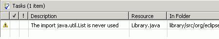

Generating an EMF Model
Top
Previous: Generate the Model Code
Next: Run the Editor
Step 3: Generate an Editor for the Model
A fully functional Eclipse editor can also be generated for any model.
By default, it is split between two plugins: an "edit" plugin includes
adapters that provide a structured view and perform command-based editing
of the model objects; an "editor" plugin provides the UI for the editor
and wizard.
-
In the GenModel, right-click the "Library"
model object and select "Generate Edit Code" from the pop-up menu.

-
Right-click the model object and select "Generate Editor Code" from the
pop-up menu.

-
Observe the generated projects, with "edit" and "editor" suffixes.

In general, if you wish to generate the model, edit, and editor plugins
in a single step, you can do so by selecting "Generate All" from the
pop-up menu.
The code should be compiled automatically as it is generated, and
should recompile whenever it is changed. If you have disabled automatic
building in the workbench preferences, you can initiate compilation
manually:
-
Select "Rebuild All" from the "Project" menu.

-
There should no errors in the "library", "library.edit", and
"library.editor" projects if you import the model from Rose.

-
There is one warning message in the "library", "library.edit", and
"library.editor" projects if you define the model using Annotated Java.

Top
Previous: Generate the Model Code
Next: Run the Editor